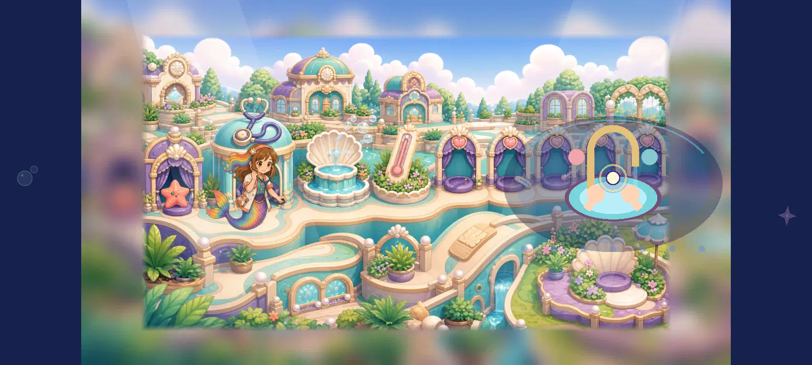

Previous18 layered viewsDoctor washing:14 closer-contact views
All14 exact native views are directly reviewed. Local contact4.2 and clean ending4.0 remain below4.5; original views remain2.3. Every source is preserved and the complete action is still open.
Every individual evaluation and anchor · Process receipt
Test-only native composition after actual viewport approach. No shipping binding, continuous motion, gameplay progress, ordinary whole-route/device/child/owner or cinematic acceptance.
DOCTOR-SINK-A03-00
doctor_1280_original.webp · static contact2.3/5 · composition2.9/5
Current actor holds a medical tool at the left station while separate schematic hands/basin occupy the right. The original spatial and style mismatch persists.
DOCTOR-SINK-A03-01
doctor_1280_key0_sink180_offset0.webp · static contact4.2/5 · composition4.1/5
The closer basin now sits under the connected hand cluster and the same original front-rim region provides clearer depth. The shell basin and child share the painted palette. At this250px character fit the hands and action remain small; the cabinet hides most of the body and no water/rinsing causality is shown. The lather is attached, but a static soapy pose is not a rubbing/rinsing action; the current visual still needs a literal connected water/result sequence.
DOCTOR-SINK-A03-02
doctor_1280_key0_sink180_offset15.webp · static contact4.2/5 · composition4.1/5
The closer basin now sits under the connected hand cluster and the same original front-rim region provides clearer depth. The shell basin and child share the painted palette. At this250px character fit the hands and action remain small; the cabinet hides most of the body and no water/rinsing causality is shown. The lather is attached, but a static soapy pose is not a rubbing/rinsing action; the current visual still needs a literal connected water/result sequence.
DOCTOR-SINK-A03-03
doctor_1280_key1_sink180_offset0.webp · static contact4.2/5 · composition4.1/5
The closer basin now sits under the connected hand cluster and the same original front-rim region provides clearer depth. The shell basin and child share the painted palette. At this250px character fit the hands and action remain small; the cabinet hides most of the body and no water/rinsing causality is shown. The lather is attached, but a static soapy pose is not a rubbing/rinsing action; the current visual still needs a literal connected water/result sequence.
DOCTOR-SINK-A03-04
doctor_1280_key1_sink180_offset15.webp · static contact4.2/5 · composition4.1/5
The closer basin now sits under the connected hand cluster and the same original front-rim region provides clearer depth. The shell basin and child share the painted palette. At this250px character fit the hands and action remain small; the cabinet hides most of the body and no water/rinsing causality is shown. The lather is attached, but a static soapy pose is not a rubbing/rinsing action; the current visual still needs a literal connected water/result sequence.
DOCTOR-SINK-A03-05
doctor_1280_key2_sink180_offset0.webp · static contact4.0/5 · composition4.1/5
The closer basin now sits under the connected hand cluster and the same original front-rim region provides clearer depth. The shell basin and child share the painted palette. At this250px character fit the hands and action remain small; the cabinet hides most of the body and no water/rinsing causality is shown. Clean palms remove the lather, but at native size their chest-level separation is partly lost against the rim. This static finishing view is4.0, below the source-only4.5 opinion.
DOCTOR-SINK-A03-06
doctor_1280_key2_sink180_offset15.webp · static contact4.0/5 · composition4.1/5
The closer basin now sits under the connected hand cluster and the same original front-rim region provides clearer depth. The shell basin and child share the painted palette. At this250px character fit the hands and action remain small; the cabinet hides most of the body and no water/rinsing causality is shown. Clean palms remove the lather, but at native size their chest-level separation is partly lost against the rim. This static finishing view is4.0, below the source-only4.5 opinion.
DOCTOR-SINK-A03-07
doctor_1600_original.webp · static contact2.3/5 · composition2.9/5

Current actor holds a medical tool at the left station while separate schematic hands/basin occupy the right. The original spatial and style mismatch persists.
DOCTOR-SINK-A03-08
doctor_1600_key0_sink180_offset0.webp · static contact4.2/5 · composition4.1/5
The closer basin now sits under the connected hand cluster and the same original front-rim region provides clearer depth. The shell basin and child share the painted palette. At this250px character fit the hands and action remain small; the cabinet hides most of the body and no water/rinsing causality is shown. The lather is attached, but a static soapy pose is not a rubbing/rinsing action; the current visual still needs a literal connected water/result sequence.
DOCTOR-SINK-A03-09
doctor_1600_key0_sink180_offset15.webp · static contact4.2/5 · composition4.1/5
The closer basin now sits under the connected hand cluster and the same original front-rim region provides clearer depth. The shell basin and child share the painted palette. At this250px character fit the hands and action remain small; the cabinet hides most of the body and no water/rinsing causality is shown. The lather is attached, but a static soapy pose is not a rubbing/rinsing action; the current visual still needs a literal connected water/result sequence.
DOCTOR-SINK-A03-10
doctor_1600_key1_sink180_offset0.webp · static contact4.2/5 · composition4.1/5
The closer basin now sits under the connected hand cluster and the same original front-rim region provides clearer depth. The shell basin and child share the painted palette. At this250px character fit the hands and action remain small; the cabinet hides most of the body and no water/rinsing causality is shown. The lather is attached, but a static soapy pose is not a rubbing/rinsing action; the current visual still needs a literal connected water/result sequence.
DOCTOR-SINK-A03-11
doctor_1600_key1_sink180_offset15.webp · static contact4.2/5 · composition4.1/5
The closer basin now sits under the connected hand cluster and the same original front-rim region provides clearer depth. The shell basin and child share the painted palette. At this250px character fit the hands and action remain small; the cabinet hides most of the body and no water/rinsing causality is shown. The lather is attached, but a static soapy pose is not a rubbing/rinsing action; the current visual still needs a literal connected water/result sequence.
DOCTOR-SINK-A03-12
doctor_1600_key2_sink180_offset0.webp · static contact4.0/5 · composition4.1/5
The closer basin now sits under the connected hand cluster and the same original front-rim region provides clearer depth. The shell basin and child share the painted palette. At this250px character fit the hands and action remain small; the cabinet hides most of the body and no water/rinsing causality is shown. Clean palms remove the lather, but at native size their chest-level separation is partly lost against the rim. This static finishing view is4.0, below the source-only4.5 opinion.
DOCTOR-SINK-A03-13
doctor_1600_key2_sink180_offset15.webp · static contact4.0/5 · composition4.1/5
The closer basin now sits under the connected hand cluster and the same original front-rim region provides clearer depth. The shell basin and child share the painted palette. At this250px character fit the hands and action remain small; the cabinet hides most of the body and no water/rinsing causality is shown. Clean palms remove the lather, but at native size their chest-level separation is partly lost against the rim. This static finishing view is4.0, below the source-only4.5 opinion.